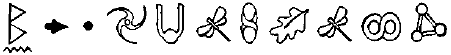
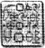

BOŞ ARSA, MALTHOUSE ENDÜSTRİ ARAZİSİ, GÜNEY CHİCAGO
JON Spiro’nun Pex ve Cips’si işe alma nedeni tartışma yetenekleri değildi. İş görüşmesinde tek bir şey üzerine denenmişlerdi. Başvuran yüz kişiye bir ceviz verilmiş ve nasıl yapabiliyorlarsa onu kırmaları istenmişti. Sadece ikisi başarılı olmuştu. Pex cevize birkaç dakika bağırmış ve onu devasa avuçlarında dümdüz etmişti. Cips çok daha tartışılacak bir metodu yeğlemişti. Cevizi masaya koymuş, görüşmeyi yapanı atkuyruğu saçından yakalayıp adamın anlını cevizi kırmak için kullanmıştı. İki adam da o anda işe alınmışlardı. Çabucak Pervasız Arno’nun örgüt içindeki en güvenilir yardımcıları seviyesine yükselmişlerdi. Bu iş harita okumayı da içerdiğinden dolayı Chicago’nun dışına çıkmalarına izin verilmiyordu; çünkü bu, Pex ve Cips’in pek iyi olmadığı bir konuydu.
O anda, Mulch terk edilmiş bir çimento fabrikasının arkasındaki kuru kilin içinde, cüce boyunda bir çukur kazarken Pex ve Cips de dolunayın altında muhabbet ediyorlardı.
“Bana niçin Pex dediklerini tahmin etmek ister misin?” diye sordu Pex, ip ucu olarak göğüs adalesini birazcık kasarak.
Cips her zaman kıtırdatmayı sevdiği bir paket patates cipsini açtı.
“Bilmeem. Yani o bir tür bir şey mi?”
“Ne gibi?”
“Bilmeem,” dedi Cips. Bu deyimi sık kullanırdı. “Francis?”
Bu, Pex’e bile çok salakça geldi. “Francis mi? Pex nasıl olabilir de Francis’in kısaltması olabilir ki?”
Cips omuz silkti. “Hey. Benim bir Robert Amcam vardı ve herkse ona Bobby derdi. O da anlamsızdı.”
Pex gözlerini yuvarladı. “O peks-tor-al, salak. Pex pekstoralın kısaltılmıştı, benim koca göğüs adalelerim olduğunu belirtiyor.”
Mulch çukurun içinden homurdandı. Bu kafasız laklağı dinlemek kürekle bir çukur kazmak kadar kötü bir şeydi. Mulch plandan sapmak ve kat kat toprağın içine dalmak için baştan çıkmak üzereydi. Ama Artemis gidişatın bu aşamasında peri güçlerinin ortaya konmasını istemiyordu. Eğer o giderse ve bu şapşallar hipnotize edilmeden kaçarlarsa, o zaman Spiro’nun paranoyası bir çentik daha yukarı çıkabilirdi.
Yukarıda, Cips oyuna devam etmeye hevesliydi.
“Bil bakalım bana niçin Cips diyorlar,” dedi, cipsleri arkasında saklayarak.
Pex alnını ovuşturdu. Bunu biliyordu.
“Söyleme,” dedi. “Bunu bulabilirim.”
Mulch kafasını çukurdan çıkardı. “Çünkü o cips yiyor, salak herif. Cips, cips yer. Siz bugüne kadar tanıştığım en kaim kafalı Çamur Adamlarsınız. Niçin beni hemen öldürmüyorsunuz? En azından saçmalıklarınızı dinlemek zorunda kalmazdım.”
Pex ve Cips donup kaldılar. Bütün zihni çalışmalarının içinde çukurdaki küçük adamı neredeyse unutmuşlardı. Ek olarak, olası kurbanlarının, “Ah, hayır, lütfen, Tanrım, hayır,” dışında bir şey söylemesine alışık değillerdi.
Pex mezarın kenarına doğru eğildi. “Saçmalıkla ne demek istiyorsun?”
“Bütün Pex-Cips konuşmaları.”
Pex kafasını iki yana salladı. “Hayır, “saçmalık” kelimesi ne demek? Bunu daha önce hiç duymadım.”
Mulch zevkle açıkladı. “Safsata, zırva, abes, süprüntü. Bunlar senin için yeteri kadar açık mı?”
Cips sonuncuyu tanıdı. “Süprüntü mü? Hey, bu bir hakaret! Bize hakaret mi ediyorsun, küçük adam?”
Mulch yapmacık bir şekilde dua ediyormuşçasına ellerini çırptı. “Nihayet, bir gelişme.”
İri adamlar açık bir hakaret karşısında nasıl davranacaklarından emin olamadılar. Onlara sürekli hakaret edenler içinde sadece iki tane canlı insan vardı: Pervasız Arno ve Jon Spiro. Ama bu işin bir parçasıydı; kafanızın içindeki müziğin sesini biraz açarak buna aldırmazdınız.
“Bu uyanık herifi dinlemek zorunda mıyız?” diye ortağına sordu Pex.
“Sanmam. Belki Bay Pervasız’a telefon etmeliyim.” Mulch homurdandı. Eğer aptallık bir suç olsaydı, bu ikisi, bir ve iki numaralı halk düşmanı olurlardı.
“Yapmanız gereken şey beni öldürmek. İş bu, değil mi? Beni öldürün ve şu iş bitsin.”
“Ne dersin, Cips? Onu hemen öldürelim mi?”
Cips bir avuç dolusu cipsi ağzına tıktı. “Evet. Tabii ki. Emir emirdir.”
“Ama ben olsam beni öylesine öldürmezdim,” diye itiraz etti Mulch.
“Öldürmez miydin?”
“Tabii ki hayır. Sizin zekânıza o kadar hakaret ettikten sonra mı? Hayır, ben özel bir şey hak ediyorum.” Beyninin aşırı ısınması sonucu neredeyse Pex’in kulaklarından çıkan dumanları görebiliyordunuz.
“Haklısın, küçük adam. Senin için özel bir şey yapacağız. Biz hiç kimsenin bize hakaret etmesine izin vermeyiz.”
“Haklısınız. Ben kaba herifin tekiyim ve benden gelecek her şeyi hak ediyorum.”
Pex ve Cips her zamanki gibi doğrudan ateş etmekten daha kötü bir şey yaratmak için kilitlendiklerinde kısa bir sessizlik oldu.
Mulch onlara bir dakika verdi, sonra nazik bir öneride bulundu.
“Eğer ben olsaydım, kendimi diri diri gömerdim.” Cips dehşete kapıldı.
“Seni canlı canlı gömmek mi? Bu berbat bir şey! Çığlıklar atıp toprağı tırmalayacaksın. Ben kabuslar görürüm.” “Kımıldamadan yatacağıma söz veriyorum. Her neyse, zaten ben bunu hak ettim. Size, bir çift aşırı gelişmiş, tek hücreli Cro-Magnon dedim.”
“Dedin mi?”
“Şey, şimdi dedim işte.”
Pex ikilinin daha atılgan olanıydı. “Tekrar, Bay Digence. Ne yapacağız, biliyor musun? Seni diri diri gömeceğiz.”
Mulch iki elini de yanaklarına vurdu. “Ah, ne dehşet!” “Bunu sen istedin, dostum.”
“Ben istedim, değil mi?”
Pex bagajdan bir kürek kaptı. “Hiç kimse bana gelişmemiş, tek ücretli Crom-adam diyemez.”
Mulch yardıma hazır bir şekilde mezarına yattı. “Tabii ki. Eminim ki hiç kimse diyemez.”
Pex öfkeyle küreklerken, salonda geliştirilmiş adaleleri takım elbisesinin kollarını zorluyordu. Birkaç dakika içinde Mulch’un üstü tamamen örtüldü.
Cips birazcık midesi kalkmış gibi görünüyordu. “Bu berbat bir şeydi. Korkunç. Zavallı küçük adam.”
Pex pişmanlık duymuyordu. “Şey, bunu o istedi. Bize... o şeyleri söyleyerek.”
“Ama canlı canlı gömüldü. Bu bir korku filmi gibi. Hani şu için korkulu şeylerle dolu olan.”
“Sanırım onu gördüm. Hani sonunda bütün kelimeler ekranda yukarı doğru çıkan?”
' “Evet, işte o. Sana doğrusunu söyleyeyim mi? O kelimeler beni perişan ettiler.”
Pex gevşek toprağın üzerini ezdi. “Merak etme, dostum. Bu filmde kelimeler yok.”
Tekrar Chevrolet arabalarına bindiler. Cips’in kafası hâlâ biraz bozuktu.
“Biliyor musun, gerçek olduğunda filmden çok daha fazla gerçek oluyor.”
Pex giriş yok tabelasını umursamadı ve otoyola girdi. “Onun nedeni koku. Bir filmde kokuyu duyamazsın.” Cips duygusal bir şekilde burnunu çekti. “Digence sonunda orada üzülmüş olmalı.”
“Buna şaşırmam.”
‘“Çünkü onu ağlarken görebiliyordum’. Omuzları sarsılıyordu, sanki gülüyormuş gibi. Ama ağlıyor olmalıydı. Yani, nasıl tuhaf biri canlı canlı gömülürken güler ki?”
“Ağlıyor olmalı.”
Cips bir paket tütsülenmiş domuz gevreği açtı.
“Evet. Ağlıyor olmalı.”
Mulch o kadar gülüyordu ki ağzına doldurduğu ilk toprakla neredeyse boğulacaktı. Al sana bir çift palyaço! Ama yine de palyaço oldukları için şanslıydılar yoksa infaz için kendi metotlarını seçebilirlerdi.
Çene açıldı, Mulch doğru beş metre indi ve bazı terk edilmiş depoları geçip kuzeye doğru döndü. Sakalı her yöne sonar sinyalleri yolluyordu. İnşa alanlarında çok fazla dikkatli olmayabilirdiniz. Her zaman için bir miktar canlı vardı ve beklemediğiniz yerlere bir şeyler gömmek Çamur Adamlarda alışkanlık haline gelmişti. Borular, foseptik çukurları ve endüstriyel atık varilleri bugün bilmeden tadına baktığı şeylerdi. Orada olmasını beklemediğiniz bir şeyi ağzınızda bulmaktan daha kötü bir şey olmazdı, özellikle de kıpır kıpır oynaşıyorsa.
Tekrar tünel açmak güzel bir duyguydu. Cüceler bunun için doğmuşlardı. Parmaklarının arasındaki toprak doğru bir histi ve kısa bir süre sonra mesafe ritmini oturttu. Öğütücü dişleri arasına toprak çiğniyor, bir yarık gibi daralmış burun deliklerinden nefes alıyor ve diğer taraftan artık maddeleri dışarı atıyordu.
Mulch’un kıl antenleri yüzeyde titreşim olmadığını ona bildirdiler, bu yüzden onu deliğinden yukarı çıkartmak için içinde kalan son cüce gazı kalıntılarını kullandı.
Holly onu bir metre havada yakaladı.
“Büyüleyici,” dedi.
“Sana ne diyebilirim ki?” dedi Mulch, özür dilercesine. “Ben doğanın bir gücüyüm. Hep burada havada mıydın?”
“Evet, ne olur ne olmaz işler kontrolden çıkabilir diye. Oldukça iyi bir gösteri sergiledin.”
Mulch elbiselerindeki toprakları vurarak temizledi. “Birkaç Neutrino atışı beni uzun süre kazmaktan kurtarabilirdi.”
Holly, Artemis’in korkunç bir taklidiyle gülümsedi. “Bu plana uygun değil. Ye şimdi plana sadık kalmalıyız, değil mi?”
Cücenin omuzlarını eğri bir folyo tabakayla kapladı ve onu Aykemerine kancaladı.
“Şimdi yavaş oluyorsun, tamam mı?” dedi Mulch, tedirgince. “Cüceler toprağın yaratıklarıdır. Biz uçmayı sevmeyiz; yüksekten atlamayı bile sevmeyiz.”
Holly kanatlardaki valfı açıp şehir merkezine doğru uçtu.
“Sen LEP hakkında ne kadar düşünceliysen ben de senin hakkında o kadar düşünceli olacağım.”
Mulch’un rengi soldu. Bu minik elfin iki tane bir seksenlik tetikçiden çok daha korkunç olması tuhaftı.
“Holly, eğer seni gücendirecek bir şey yaptımsa, içten bir şekilde-”
O cümlesini bitiremedi çünkü aniden hızlanmaları kelimeleri ağzına tıkadı.
SPİRO İĞNESİ
Pervasız Arno, Artemis’in hücresine girdi. Kendi tuvaleti ve eğlence sistemiyle burası yeteri kadar konforluydu. Tabii ki eksik olan bir şeyler de vardı: pencereler ve kapı tokmağı.
Pervasız, Artemis’in kafasını hafifçe okşadı. “Londra’daki o lokantada ne oldu bilmiyorum ama burada onun gibi bir şey denersen seni ters yüz edip iç organlarını yiyeceğim.” Söylediklerinin üzerini noktalamak için sivri dişlerini gıcırdattı ve yakınına eğilip Artemis’in kulağına fısıldadı. Artemis her hecedeki diş tıkırtısını duyabiliyordu.
“Patronun ne dediği umurumda değil, sonsuza dek işe yarar kalmayacaksın, bu yüzden eğer senin yerinde olsaydım bana karşı nazik olurdum.”
“Eğer sen benim yerimde olsaydın,” diye karşılık verdi Artemis, “o zaman ben senin yerinde olurdum ve eğer senin yerinde olsaydım çok uzaklarda bir yere saklanırdım.” “Ya, gerçekten mi? Niçin öyle yapardın?”
Artemis kelimelerinin onun üzerindeki etkisi eksiksiz olsun diye bir an durdu.
“Çünkü Kâhya senin peşinde. Ye aşırı derecede kızmış durumda.”
Pervasız birkaç adım geri attı. “Hadi oradan, velet. Onun yere düştüğünü gördüm. Kanları gördüm.”
Artemis sırıttı. “Ben yaşıyor demedim ki. Ben sadece geliyor dedim.”
“Sen sadece kafamı karıştırmaya çalışıyorsun. Bay Spiro bu konuda beni uyardı.”
Pervasız tereddüt ederek kapıya doğru ilerledi; gözlerini asla Artemis’den ayırmıyordu.
“Merak etme, Pervasız. Onu cebimde getirmedim. Zamanı gelene kadar yaşayacak saatlerin, belki de günlerin var.”
Pervasız Arno kapıyı o kadar sert kapadı ki çerçeve sallandı. Artemis’in sırıtışı arttı.
Artemis duşa girdi, sıcak suyu açıp dövercesine alnına akıttı. Aslında, kendini biraz tedirgin hissediyordu. İnsan kendi evinin güvenli ortamında plan yapması bir şeydi. Aslanın ininde kapalı durumda o planı icra etmek başka bir şey. Ve bunu hiç kabul etmiş olmasa da son birkaç gün içinde kendine güveni oldukça hasar almıştı. Spiro onu Londra’dayken kurnazlıkla yenmişti ve hem de pek bir çaba sarf etmeden. Arka sokaktaki bir turist gibi safça girişimcinin tuzağına düşmüştü.
Artemis yeteneklerinin oldukça farkındaydı. O bir komplocu, bir dalavereci ve alçakça işler planlayan biriydi. Mükemmel bir planın uygulanmasından daha büyük bir heyecan yoktu. Ama son zamanlarda zaferleri suçluluk hissiyle lekelenmişti, özellikle de Kâhya’ya olanlardan sonra. Artemis eski dostunu kaybetmeye o kadar yaklaşmıştı ki sadece onu düşünmek bile küçük dehanın midesini bulandırıyordu.
Her şey değişmişti. Babası kısa bir süre sonra, Artemis’in doğru seçimleri yapacağını umarak izleyecekti. Ve eğer yapamazsa, Büyük Artemis büyük ihtimalle o seçenekleri ondan alacaktı. Babasının sözlerini hatırladı. ““Ya sen, Arty? Bu yolculuğu benimle beraber yapacak mısın? Zamanı gelince sen de bir kahraman olma fırsatını değerlendirecek misin?”
Artemis hâlâ o sorunun cevabını bilmiyordu.
Artemis, üzerine onu esir alan kişinin baş harfleri işlenmiş bir bornozla kurulandı. Spiro varlığını ona sadece altın harflerle hatırlatmıyordu, harekete duyarlı, kapalı devre bir kamera da odanın içinde Artemis’i takip ediyordu.
Spiro’nun kubbesine girme ve C Küpü geri çalma uğraşma odaklandı. Spiro’nun güvenlik önlemlerinin çoğunu önceden tahmin etmiş ve ona göre hazırlanmıştı. Ama bazıları beklenmedik şekilde ve oldukça ustaca yapılmış olsa da Artemis’in elinde peri teknolojisi ve Foaly vardı; eğer umutları gerçekleşirse. Sentor’a yardım etmemesi emredilmişti ama eğer Holly binaya zorla girmeyi ona bir yarış olarak sunarsa, Artemis sentorun dayanamayacağından emindi.
Yatağa oturup öylesine boynunu kaşıdı. Mikrofonun lateks muhafazasına, Holly’nin ona güvence verdiği gibi, duşta bir şey olmamıştı. Hapishanesinde yalnız olmadığını bilmek rahatlatıcıydı.
Mikrofon titreşimlerle çalıştığı için, Artemis talimatlarını gönderilmesi için yüksek sesle konuşması gerekmiyordu.
“İyi akşamlar, dostlarım,” diye fısıldadı, sırtı kameraya dönüktü. “Her şey plana uygun bir şekilde gidiyor, Mulch’un canlı bir şekilde geri geldiğini kabul edersek. Spiro’nun şapşallarının ziyaretinize gelebileceği konusunda sizi uyarmalıyım. Adamlarının caddeleri izlediğinden eminim ve adamlarımın yok edildiğini inanması onu yanlış bir. güvenlik hissine sokup uyutabilir. Bay Spiro bir nezaket gösterip beni binada dolaştırdı ve görevimizi tamamlamak için gereken her şeyi kaydettiğinizi umuyorum. Sanırım bu tür bir operasyona yerel verilen terim talan. Sizden istediğim şeyler şunlar.
Artemis yavaşça fısıldayarak her noktayı net bir şekilde belirtti. Tim üyelerinin talimatlarını son harfine kadar uygulamaları hayati derecede önemliydi. Eğer uygulamazlarsa, bütün örgü aktif bir volkan gibi patlayabilirdi. Ve Artemis de o anda, volkanın kraterinde oturuyor olacaktı.
Pex ve Cips’in keyfi yerindeydi. İğne’ye dönüşlerinde, Bay Pervasız onlara sadece,1 Mo Digence işinin beş bin dolarlık ikramiyesini vermekle kalmamış, onlara bir iş daha vermişti. İğnenin dış kameraları ana kapının dışında park etmiş siyah bir kamyoneti fark etmişlerdi. Kamyon üç saattir oradaydı ve bant başa alınıp izlendiğinde aracın yer bulmak için binanın çevresinde bir saatten fazla dolaştığını görülmüştü. Bay Spiro onları şüpheli görünen araçları aramaları konusunda uyarmıştı ve bu kesinlikle şüpheliydi.
“Aşağı inin,” diye emretti Pervasız, güvenlik odasındaki koltuğundan. “Eğer içeride nefes alan bir şey varsa, onlara benim binamın dışında niçin nefes aldıklarını sorun.”
Bu, Pex ve Cips’in anladığı türden bir talimattı. Ne soru sorma, ne de karmaşık bir makineyi kullanmak gerekiyordu. Sadece kapıyı açıp kapıya yakın onlar her şeyi korkut. Bu kolaydı. Asansörde şakalaşıyorlardı; pazıları uyuşana kadar birbirlerinin omuzlarını yumrukluyorlardı.
“Bu gece iyi para yapabiliriz, ortak,” dedi Pex, kan dolaşımı devam etsin diye pazıların masaj yapıyordu.
“Kesinlikle yapabiliriz,” dedi ilgilenen Cips, alabileceği bütün Çakmaktaş kasetlerini düşünerek. “Bu ek bir ikramiye olmalı. En azından beş binlik. Hepsi beraber...”
İki adam parmaklarıyla sayarken bir süre sessiz geçti.
“Bu oldukça çok para,” dedi sonunda Pex.
“Oldukça çok para,” diye ona katıldı Cips.
Juliet dürbününü İğnenin dönen kapılarında denemişti. Peri miğferindekini kullanmak çok daha kolaydı ama ne yazık ki son birkaç yılda kafası çok fazla büyümüştü. Juliet sırık gibi bir veletten tam bir atlete dönüşmüştü.
Ama mükemmel bir koruma değildi; hâlâ düzeltilmesi gereken bazı pürüzler vardı. Kişilik pürüzleri.
Juliet Kâhya neşeli bir yaratıktı; elinden başka türlü olmak gelmiyordu. Dik kafalı bir politikacının omzunda, yüzünde ahmakça ciddi bir ifadeyle ayakta durma fikrini korkunç buldu. Can sıkıntısından çıldırabilirdi; Artemis ona profesyonel olarak öyle olmasını söylemediği sürece. Bir insanın canı Artemis’in yanında asla sıkılamazdı. Bunun olma olasılığı yoktu. Artemis herkesi bunun son işi olduğu konusunda temin etmişti. Chicago’dan sonra namuslu olacaktı. Eğer Chicago’dan sonrası olursa.
Bu izleme görevi çok sıkıcıydı. Sessizce oturmak Juliet’in doğasında yoktu. Hiperaktif mizacı Madam Ko’nun Akademisinde birden çok dersten başarısız olmasına neden olmuştu.
“Kendinle barışık ol, kızım,” demişti Japon eğitmen. “Özünde sakin bir yer bul ve oraya yerleş.”
Madam Ko kung fu bilgeliği ıvır zıvırına başladığında Juliet genelde esnemesini zor tutardı. Diğer taraftan Kâhya onu yalayıp yutmuştu. Sonsuza kadar kendi sakin yerini bulmuş ve oraya yerleşmişti. Hatta, o sakin yerinden sadece o an Artemis’i tehdit eden her kim ise onu un ufak etmek için çıkardı. Belki de onda mavi elmas dövmesi olup Juliet’de onun olmamasının nedeni buydu.
İki iri yarı adam İğneden çıktı. Sırıtıyor ve birbirlerinin omuzlarını yumrukluyorlardı.
“Yüzbaşı Short, iş üstündeyiz,” dedi Juliet, Holly’nin frekansına ayarlanmış bir walkie-talkie’ye.
“Anlaşıldı,” diye karşılık verdi Holly, Spiro İğnesinin üzerindeki yerinden. “Kaç düşman var?”
“İki. İri ve salak.”
“Desteğe ihtiyacın var mı?”
“Olumsuz. Ben o ikisini katlarım. Sen döndüğünde bir iki kelime edebilirsin.”
“Tamam. Foaly ile konuşur konuşmaz aşağı ineceğim. Ve Juliet, onları damgalama.”
“Anlaşıldı.”
Juliet telsizi kapatıp kamyonetin arkasına geçti. Katlanan bir oturma yerinin altına bir yığın izleme aletini sokuşturdu, ne olur ne olmaz iki koca herif gerçekten onu etkisiz hale getirirlerse diye. Bu pek olası değildi ama abisi ne olur ne olmaz diye suç aygıtlarını saklardı. Juliet takım elbisesinin ceketini çıkardı ve bir beysbol kepini kafasına ters taktı. Sonra arka kapıyı açtı ve yola çıktı.
Pex ve Cips, State Caddesini geçip kamyonete doğru ilerlediler. Karartılmış pencereleriyle kesinlikle şüpheli görünüyordu ama ikili aşırı derecede endişelenmemişti. Bugünlerde testosteron yüklenmiş bütün üniversite öğrencilerinin karartılmış pencereleri vardı.
“Ne dersin?” diye ortağına sordu Pex.
Cips elini yumruk yaptı. “Sanırım kapıyı çalmamıza gerek yok.”
Pex başıyla onayladı. Bu genelde uyguladıkları plandı. Cips kapıyı menteşelerinden birinden sökmek üzere ilerlerken kaputun arkasından genç bir bayan çıktı.
“Babamı mı arıyorsunuz?” dedi mükemmel bir MTV tonuyla. “İnsanlar her zaman onu ararlar ve o hiçbir zaman ortalıkta görünmez. Yani Babam burada değil. Bunu maneviyat olarak söylüyorum tabii ki.”
Pex ve Cips aynı anda gözlerini kırpıştırdılar. Göz kırpıştırma uluslar arası dilde “Hı?” demekti. Bu kız, sarı ve beyaz ırkın çok çekici bir melezdi ama güvenlik görevlisi adamların yüzlerinden okunanlar değerlendirildiğinde Yunanca da konuşuluyor olabilirdi. Ne yazık ki “Maneviyat” dört heceliydi.
“Bu kamyonet senin mi?” diye sordu Cips, bunu kötü bir kelime olarak kabul ederek.
Kız at kuyruğu saçlarını çevirdi. “Aynı herhangi birimizin herhangi bir şeye sahip olabileceği gibi. Bir dünya, bir kişi, değil mi, dostlar? Sahip olmak, bildiğiniz gibi bir yanılsama olabilir. Belki kendi vücutlarımıza bile sahip değilizdir. Çok daha büyük bir ruhun hayalleri felan olabiliriz.”
Pex zıvanadan çıktı.
“Kamyonet senin mi?” diye bağırdı, baş ve işaret parmağını kızın boynuna dolayarak.
Kız başıyla onayladı. Nefes borusunda konuşacak kadar hava yoktu.
“Bu daha iyi. İçeride kimse var mı?”
Bu kez kafa iki yana sallandı.
Pex sıkışını biraz azalttı.
“Ailende başka kaç kişi var?”
Kız olası en az havayı kullanarak fısıltıyla karşılık verdi.
“Yedi. Babam, Annem, dedem ve babaannem ve üçüzler. Beau, Mo ve Joe. Onlar sushi yemeğe gittiler.”
Pex oldukça neşelendi. Üçüzler, dede ve babaanne, pek bir sorunmuş gibi görünmüyordu.
“Tamam. Kapıyı aç, ufaklık.”
“Sushi mi?” dedi Cips. “Şu çiğ balık. Hiç yedin mi, dostum?”
Kız kapıyı açmak için kurcalarken Pex onun boynunu tutuyordu.
“Evet. Bir keresinde süper marketten almıştım.”
“İyi miydi?”
“Evet. On dakika kızgın ateşte kızarttım. Kötü değildi.”
Kız kamyonetin kapısını geriye doğru çekti ve içeri girdi. Pex ve Cips eğilerek onu takip ettiler. Pex adım atmak için kızın boynunu bir anlık gevşetti. Bu hataydı. Uygun eğitim almış bir asker asla bağlanmamış bir tutuklunun güvenliği olmayan bir araca önden binmesine izin vermezdi.
Kız kazaen tökezlenip iki diziyle iç döşemeye çöktü.
“Sushi,” dedi Pex. “Kızarmış patatesle iyi gidiyor.”
Sonra kızın ayağı hızla geri gelip onun göğsünde patladı. Kiralık adam olduğu yere çöktü, soluk almaya çalışıyordu.
“Pardon,” dedi kız, doğrulurken. “Kaza oldu.”
Cips bir tür rüya görüyor olduğunu sandı çünkü küçük pop prensesinin doksan kiloluk adale yığınını yıkması imkânsızdı.
“Sen... sen sadece...” diye kekeledi. “Bu inanılmaz. Olamaz.”
“Olamaz,” dedi Juliet, bir balerin gibi parmaklarının ucuna kalkarak. Atkuyruğunun ucundaki yeşim taşı halkayı, merkez kaç kuvvetiyle çevirdi. Halka, bir sapandan atılan bir taş gibi Cips’in gözlerinin arasına çarptı. Adam geriye doğru sendeleyip deri kaplı bir kanepenin üzerine oturdu.
Arkasındaki Pex’in soluması normale dönüyordu. Gözleri çılgınca dönüşünü durmuş ve saldırgana odaklanmıştı.
“Selam,” dedi Juliet, ona doğru eğilip. “Bil bakalım,”
“Neyi?” dedi Pex.
“Sushiyi kızgın ateşte pişirmemen gerekiyor,” dedi kız, avuç içlerini tetikçinin iki şakağına da vurarak. Baygınlık çabucak geldi.
Mulch tuvaletten çıktı, tünel kazma pantolonunun popo kapağını düğmeliyordu.
“Ne kaçırdım?” diye sordu.
Holly, Chicago şehir merkezinin -burası yerel olarak, çevreyi saran kavisli yoldan dolayı İlmik olarak bilinirdi- kırk beş metre üstünde havada duruyordu. İki nedenden dolayı buradaydı. İlk olarak, bina planını çıkarabilmek için Spiro İğnesinin bir X-ışını taramasına ihtiyaçları vardı. İkincisi de Foaly’le yalnız konuşmak istiyordu.
Yirminci yüzyıl başlarından kalma bir bloğun çatısına tünemişi taş bir kartal gördü ve kafasının üzerine indi. Birkaç dakika sonra tüneğinden kalkması gerekiyordu yoksa kalkanının titreşimi kayayı toz haline getirmeye başlayacakta
Juliet’in sesi kulaklığından geldi.
“Yüzbaşı Short, iş üstündeyiz.”
“Anlaşıldı,” diye karşılık verdi Holly. “Kaç düşman var.”
“İki. İri ve salak.”
“Desteğe ihtiyacın var mı?”
“Olumsuz. Ben o ikisini katlarım. Sen döndüğünde bir iki kelime edebilirsin.”
“Tamam. Foaly ile konuşur konuşmaz aşağı ineceğim. Ve Juliet, onları damgalama.”
“Anlaşıldı.”
Holly gülümsedi. Juliet mükemmel biriydi. Kâhya’nın küçük bir modeliydi. Ama o delidoluydu. Gizli izleme görevindeyken bile on saniye çene çalmadan duramıyordu. Abisindeki disiplininin bir parçası bile onda yoktu. O mutlu bir gençti. Bir velet. Bu iş kolunda olmaması gerekiyordu. Artemis’in onu çılgınca planlarına çekmesinin bir anlamı yoktu. Ama bu İrlandalı çocukta kuşkularını sana unutturan bir şey vardı. Geçmiş on altı ay süresince, onun için bir trolle boğuşmuş, bütün ailesini iyileştirmiş, Atlantik Okyanusuna dalmıştı ve şimdi Yarbay Root’un doğruda emirlerinden birine itaat etmemeye hazırlanıyordu.
LEP Harekât merkezine bir kanal açtı.
“Foaly. Dinliyor musun?”
Birkaç saniye boyunca hiçbir ses gelmedi, sonra sentorun sesi miğferin mikrofonundan patladı.
“Holly. Dur. Sesin biraz bulanık geliyor. Dalga boyunu biraz ayarlayacağım. Benimle konuş. Bir şey söyle.
“Deneme. Bir iki. Bir iki. Troller berbat bir öfke krizine girdiler.”
“Tamam. Anladım. Her şey net. Çamur Ülkede işler nasıl gidiyor?”
Holly altındaki şehre bir göz attı.
“Burada çamur yok. Sadece cam, çelik ve bilgisayarlar var. Sen olsan hoşlanırsın.”
“Ah, hayır. Ben hoşlanmam. Çamur Adamlar Çamur Adamdır, takım elbise ya da peştamal giymeleri fark etmez. İnsanların tek iyi tarafı televizyon. PPTV’de devam eden tek şey tekrarlar. Goblin generaller davasının bittiğine neredeyse üzüleceğim. Sayende bütün suçlamalarda suçlu kabul edildiler. Önümüzdeki ay karar ilan edilecek.”
Endişe Holly’nin midesindeki gerginlik hissini birazcık azalttı. “Suçlu. Göklere şükür ki. İşler sonunda tekrar normale dönebilir.”
Foaly kıs kıs güldü. “Normal mi? Normal için yanlış bir iştesin. Eğer Artemis’in zımbırtısını Spiro’dan alamazsak normale elveda diyebilirsin.”
Sentor haklıydı. Ahlak masasından Recon’a terfi ettiğinden beri hayatı normal olmamıştı. Ama gerçekten normal bir yaşam istemiş miydi? Ahlak masasından ayrılmasının ilk nedeni bu değil miydi?
“Peki niçin aradın?” diye sordu Foaly. “Memleketi özledin, değil mi?”
“Hayır,” diye karşılık verdi Holly. Ve bu doğruydu. Özlememişti. Elf yüzbaşı, Artemis onu en son gizli planına karıştırdığından beri Haven’i çok nadiren düşünmüştü. “Tavsiyene ihtiyacım var.”
“Tavsiye mi? Ah, gerçekten mi? Bu, başka bir şekilde yardım isteme metodu olmasın? Yarbay Root’un sözleri ‘Elinde ne varsa o kadardı. Kurallar öyle, Holly.”
Holly iç çekti. “Peki, Foaly. Kurallar öyleyse öyledir. Julius en iyisini bilir.”
“Bu doğru. Julius in iyisini bilir,” dedi Foaly ama sesi ikna olmuş gibi çıkmıyordu.
“Büyük ihtimalle zaten yardım edemezdin. Spiro’nun güvenliği oldukça gelişmiş seviyede.”
Foaly kişnedi. Bir sentorun kişnemesi duyulması gereken bir şeydir.
“Evet. Tabii. Nesi varmış ki? Birkaç teneke kutu ve bir köpek mi? Çok korktum.”
“Keşke öyle olsaydı. Bu binadaki şeyleri daha önce hiç görmedim. Zekice şeyler.”
Holly’nin siperliğinin köşesindeki küçük bir likit kristal ekran titreşip çalıştı. Foaly, Polis Plazadan görüntülü yayma geçmişti. Teknik olarak, resmi olmayan bir operasyonda yapmaması gereken bir şeydi bu. Sentor meraklanmıştı.
“Bu arada ne yaptığını biliyorum,” dedi Foaly, parmağım sallayarak.
“Ne demek istediğin konusunda hiçbir fikrim yok,” dedi masumca Holly.
“Büyük ihtimalle zaten yardım edemezdin. Spiro’nun güvenliği oldukça gelişmiş seviyede,” diye onu taklit etti sentor. “Egomun altında bir ateş yakmaya çalışıyorsun. Ben aptal değilim, Holly.”
“Tamam. Belki öyle yapıyorum. Gerçeği doğrudan duymak ister misin?”
“Ah, şimdi de bana gerçeği mi söyleyeceksin? LEP için ilginç bir taktik.”
“Spiro İğnesi bir kale. Sen olmadan içeri giremeyiz, Artemis bile bunu kabul ediyor. Alet ya da fazladan peri gücü aramıyoruz. Hava dalgaları hakkında tavsiye, biraz da kamera işi. Tek istediğim hatları açık tutman.” Foaly çenesini kaşıdı. “Demek içeri giriş yolu yok. Artemis bile bunu kabul ediyor.”
‘“Foaly olmadan bunu yapamayız.’ Söyledikleri kelimesi kelimesine böyleydi.”
Sentor yüz hatlarında oluşan kendini beğenmiş ifadeyi göstermemek için çaba harcadı.
“Hiç kaydınız var mı?”
Holly kemerindeki el bilgisayarını aldı.
“Artemis İğnenin içinde biraz film çekti. Onu şimdi sana postalıyorum.”
“Bana binanın planı lazım.”
Holly, Foaly nerede olduğunu görebilsin diye siperliğini sağa ve sola çevirdi.
“İşte bu yüzden buradayım. X-ışını taraması yapabilmek için. Dosya on dakika içinde ana bilgisayarında olacak.”
Holly kulaklıklarında bir zil çaldığını duydu. Bu bir bilgisayar alarmıydı. E-postası Polis Plazaya ulaşmıştı. Foaly dosyayı açtı.
“Şifre kodlan. Tamam. Kameralar. Sorun değil. CCTV kameralarından büyüttüğümü sana gösterene kadar bekle. Koridorları hızla geçiyorum. Tam tam ta tam. Ah, işte kubbe. Seksen beşte. Basınç padleri, antibiyotik mat. Hareket algılayıcılar. Isıya hassas lazerler. Isı kameraları. Ses tanımlama, retina ve başparmak tarayıcılar.” Durdu. “Bir Çamur Adam için etkileyici.”
“Bana mı söylüyorsun,” diye ona katıldı Holly. “İki teneke ve bir köpekten birazcık fazla.”
“Fowl haklıymış. Ben olmadan işiniz bitmişti.”
“Peki, yardım edecek misin?”
Foaly o anı iyice düşünmesi gerekiyordu. “Hiçbir şey söz vermiyorum, eğer...”
“Evet?”
“Ekranı açık tutacağım. Ama bir şey olursa...”
“Anladım.”
“Garanti yok.”
“Garanti yok. Sana bir karton havuç borçluyum.”
“İki karton. Ve bir kasa da böcek suyu.”
“Anlaştık.”
Sentorun yüzü bir meydan okuma beklentisiyle ışıldadı.
“Onu özleyecek misin, Holly?” diye birden sordu.
“Kimi özleyecek miyim?” dedi ama cevabı zaten biliyordu.
“Fowl denen çocuğu, tabii ki. Her şey planlandığı gibi giderse, anılarını sileceğiz. Artık gizli ya da esaslı planlanmış maceralar olmayacak. Sakin bir hayat olacak.”
Holly, Foaly’nin bakışlarından kaçınmaya çalıştı ama miğferin kamerası odaklanmıştı ve sentor onu göremezdi.
“Hayır,” dedi. “Onu özlemeyeceğim.”
Ama Holly’nin gözleri gerçeği söylüyordu.
Holly İğnenin etrafını çeşitli yüksekliklerde döndü, ta ki X-ışmı tarayıcısı üç boyutlu bir model için yeterli veriyi toplayana kadar. Dosyanın bir kopyasını Polis Plazadaki Foaly’ye e-posta attı ve kamyonete geri döndü.
“Onları işaretlememeni söylediğimi sanıyorum,” dedi, yerde yatan tetikçilere doğru eğilip.
Juliet omuz silkti. “Hey. O kadar da önemli değil, peri kız. Çarpışmanın heyecanıyla kendimi kaybetmiş olmalıyım. Ona mavi kıvılcımlarla bir atış yap ve işini bitir.”
Holly, Cips’in alnındaki mükemmel bir daire şeklindeki çürüğün etrafında parmağını dolaştırdı.
“Beni görmeliydin,” dedi Juliet. “Pat, pat ve ikisi de yerdeydi. Tek bir şanları bile olmadı.”
Holly parmağından tek bir kıvılcım yolladı; kıvılcım, çürüğü ıslak bir bezin bir kahve lekesini silmesi gibi sildi.
“Biliyorsun ki onları bayıltmak için Neutrino kullanmalıydın.”
“Neutrino mu? O zaman bu işin eğlencesi nerede kalacaktı?”
Yüzbaşı Short miğferini çıkarıp genç insana dik dik baktı.
“Bunun eğlenceli olması gerekmiyor, Juliet. Bu bir oyun değil. Kâhya’nın başına geleni dikkate bunu farkına vardın sanıyordum.”
Juliet’in sırıtışı kayboldu. “Bunu bir oyun olmadığını biliyorum, Yüzbaşı. Belki de bu benim işleri halletme yolum.”
Holly bakışlarını çevirmedi. “İyi, o zaman, belki de sen yanlış bir iş kolundasın.”
“Ya da belki de sen bu iş kolunda fazla uzun zamandır bulunuyorsun,” diye tartışmaya devam etti Juliet. “Kâhya’ya göre, sen de bir zamanlar birazcık çılgınmışsın.”
Mulch tuvaletten çıktı. Bu kez kendine güneş kremi sürmüştü. Saat tam gece yarısıydı ama cüce işi şansa bırakmıyordu. Eğer bu ek armut şeklinde giderse, büyük ihtimalle öyleydi, o zaman kesinlikle sabaha kaçıyor olabilirdi.
“Sorun ne, bayanlar? Benim için kavga ediyorsanız, canınızı sıkmayın. Kendi türümün dışında asla çıkmayacağımı belirteyim.”
Gerginlik delinmiş bir balon gibi söndü.
“Rüyandan görürsün, kıl-yumağı,” dedi Holly.
“Daha çok kabus gibi,” diye ekledi Juliet. “Gübre yığında yaşayan biriyle asla çıkmayacağımı belirteyim.” Mulch telaşlanmadı. “İkiniz de inkar ediyorsunuz. Benim dişiler üzerinde böyle bir etkim var.”
“Hiç şüphesiz,” dedi Holly, sırıtarak.
LEP Yüzbaşısı portatif bir masa açtı ve miğferini üstüne koydu. Miğferin kamerasını yansıtıcıya getirdi ve Spiro İğnesinin üç boyutlu planını açtı. Plan havada neon-yeşil ışıklardan bir kafes gibi dönmeye başladı.
“Tamam, millet. İşte plan. Birinci Tim seksen beşinci kattaki duvarı yıkıp içeri girecek. İkinci Tim helikopter pistindeki kapıdan girecek. İşte.”
Holly el bilgisayarının ekranındaki uygun noktalara dokunarak girişleri işaretledi. Havada duran planda yanıp sönen iki turuncu nokta belirdi.
“Foaly bize yardım etmeyi kabul etti, yani uzaktan bizimle olacak. Juliet, sen bu el bilgisayarını al. Gnomeca sembolleri umursama; bize sana görüntülemen gereken dosyaları yollayacağız. Ama hoparlörleri kapatmak için kulaklıkları tak. En son ihtiyacımız olan şey bilgisayarların yanlış anda biplemesi. Ekranın altındaki küçük çentik bir mikrofondur. Fısıltıya hassas olduğu için bağırmana gerek yok.”
Juliet kredi kartı büyüklüğündeki bilgisayarı bileğine bağladı.
“Timler kimlerden oluşuyor ve hedefleri nelerdir?” Holly üç boyutlu görüntünün içine girdi. Vücudu yanıp sönen ışıklarla kaplanmıştı.
“Birinci Tim güvenlikle ilgilenecek ve kubbe nöbetçilerin oksijen tanklarını kapatacak. Sonra İkinci Tim kutunun peşine düşecek. Basit. İkişer ikişer gideceğiz. Sen ve Mulch. Artemis ve ben.”
“Ah, hayır,” dedi Juliet, kafasını iki yana sallayarak. “Benim Artemis’le beraber gitmem gerekiyor. O benim şefim. Abim olsa Artemis’e zamk gibi yapışırdı. Bu yüzden ben de öyle yapacağım.”
Holly hologramdan dışarı çıktı. “Bu işe yaramaz. Sen uçamaz ve duvarlara tırmanamazsın. Her timde bir peri olması gerekiyor. Eğer hoşuna gitmezse, bir dahaki sefer Artemis’i gördüğünde ona sor.”
Juliet kaşlarını çattı. Bu anlamlıydı.
Tabii ki öyleydi. Artemis’in planları her zaman anlamlıydı. Artemis’in bütün her şeyi İrlanda’da açıklamamış olması şimdi çok daha açıkça görünüyordu. Juliet’in itiraz edeceğini biliyordu. Altı saat ayrı kalmaları yeteri kadar kötüydü. Ama görevin en önemli aşaması önlerindeydi ve Artemis’in yanında olan bir Kâhya olmayacaktı. Holly tekrar holograma girdi.
“Birinci Tim, sen ve Mulch, İğneye tırmanacaksınız ve seksen beşinci katın zeminini yıkıp içeri gireceksiniz. Orada, bu video bandı CCTV kablo yayınma takacaksınız.”
Holly kıvrık bir tele benzeyen bir şey gösterdi. “Şarjlı optik lif,” diye açıkladı. “Herhangi bir televizyon sistemine uzaktan girmeyi sağlar. Bu yerine konulduğunda, Foaly binadaki bütün kameralardaki görüntüleri miğferlerimize yollayabilir. Aynı zamanda insanlar^ görmelerini istediği sinyalleri gönderebilir. İki oksijen tankıyla kendi orijinal karışımlarımızı da değiştireceğiz.”
Juliet video bandı cebine koydu.
“Ben çatıdan gireceğim,” diye devam etti Holly. “Oradan, Artemis’in odasına geçeceğim. Birinci Tim bize yol açık der demez, C Küpün peşine düşeceğiz.” “Çok kolaymış gibi anlattın,” dedi Juliet.
Mulch güldü. “Her zaman böyle yapar,” dedi. “Ve asla öyle olmaz.”
BİRİNCİ TİM, SPİRO İĞNESİNİN ZEMİNİ
Juliet Kâhya yedi yakın dövüş sanatında eğitim görmüştü. Acıya aldırmamayı ve uykusuzluğa dayanmayı öğrenmişti. Hem psikolojik, hem de fiziki işkenceye dayanabilirdi. Ama bu binaya girmek için katlanması gereken şeye onu hiçbir şey hazırlamamıştı.
Her yüzündeki yirmi dört saatlik aktivitesiyle İğnenin kör noktası yoktu, bu yüzden çıkışlarına zeminden başlamak zorundaydı. Juliet kamyoneti yaklaştırıp yan bir şekilde, duvara elinden geldiği kadar yakın park etti.
Taşıtın açılan tavanından çıktılar. Holly’nin kamuflaj folyosuna sarılmışlardı. Juliet, Mulch’un Aykemerine bağlanmıştı.
Juliet, Mulch’un miğferine hafifçe vurdu. “Pis kokuyorsun.”
Silindirik vericiden Juliet’in kulağına Mulch’un cevabı geldi.
“Belki sana göre öyle ama bir dişi cüce için ben sağlıklı bir erkeğin kokusuna sahibim. Pis kokan sensin, Çamur Kız. Bana göre, sen iki aylık çoraptan daha kötü kokuyorsun.”
Holly kafasını açık tavandan içeri soktu.
“Sessiz olun!” diye fısıldadı. “İkiniz de! Eğer unuttunuzsa vaktimiz sınırlı. Juliet, senin kıymetli şefin yukarıda bir odaya tıkılmış benim gelmemi bekliyor. Saat şimdiden dördü beş geçiyor. Nöbetçiler bir saatten daha az bir sürede değiştirilecekler ve bu şapşalları hipnotize etmeyi bitiremedim. Burada elli beş dakika zamanımız var. Bunu tartışarak boşa geçirmeyelim.”
“Niye bizi oradaki çıkıntıya kadar uçurmuyorsun?” “Basit askeri taktik. Eğer bölünürsek, o zaman bir tim başarabilir. Eğer beraber olursak, biri gitti mi hepimiz gideriz. Böl ve fethet.”
Holly’in sözleri Juliet’i kendine getirdi. Peri kız haklıydı; bunu bilmesi lazımdı. Bu tekrar oluyordu; hayati bir anda kontrolünü kaybediyordu.
“Tamam. Hadi gidelim. Nefesimi tutacağım.”
Mulch iki avucunu da ağzına sokup gözeneklerindeki son nem kırıntılarım da emdi.
“Tutun,” dedi, ağzındaki ellerini çıkarıp. “Gidiyoruz.”
Cüce güçlü bacaklarını esnetip Spiro İğnesinin duvarında bir buçuk metre yukarı sıçradı. Juliet arkasından aşağı yukarı sallanırken bütün dünyayı sanki sualtındaymış gibi hissediyordu. Aykemeriyle yolculuk etmenin sorunu buydu: kişi ağırlıksız olmanın yanı sıra koordinasyonu kaybedebilirdi ve bazen boşluk bulantısı da yapıyordu. Aykemeri kımıldamayan objeleri taşımak için yapılmıştı, canlı perileri değil; insanlarıysa kesinlikle hayır.
Mulch’un birkaç saattir hiçbir şey içmemiş olması cüce gözeneklerinin iğne deliği kadar büyümesine neden oluyordu. Spiro İğnesinin düz dış yüzeyine gürültülü bir şekilde yapıştılar. Cüce film camlardan kaçınıp metal kirişleri tercih ediyordu çünkü ikili kamuflaj folyosuna sarılmış olsa bile kol ve bacaklarından görülmeye yetecek kadarı dışarı taşıyordu. Kamera folyosu giyeni tamamen görünmez hale sokmuyordu. Binlerce mikro algılayıcı, materyali inceledi, analiz etti ve etrafını yansıttı ama bir yağmur bütün her şeyi çözerdi.
Mulch hızla tırmanırken düzenli bir ritim tutturdu. Çifte eklemli el ve ayak parmakları kıvrılıp en ufak girintiyi bile yakalayabiliyordu. Girinti olmadığı yerlerde cücenin gözenekleri düz yüzeye yapışıyordu. Sakal kılları miğferin siperliği altında pervane gibi dönüp binanın yüzeyini araştırıyordu.
Juliet sormak zorunda kaldı. “Sakalın? İnsanı biraz ürkütüyor. Ne yapıyor? Çatlakları mı arıyor?”
“Titreşimleri,” diye homurdandı Mulch. “Tarayıcılar, yayınlar, bakım elemanları.” Tabii ki cümle tamamlamak için bütün enerjisini harcamayacaktı. “Hareket algılayıcıları bize fark ederler. İşimiz bitti. Folyolu ya da folyosuz.” Juliet nefesinin harcamadığı için ortağını suçlamadı. Daha çok yolları vardı. Dümdüz yukarı doğru.
Bitişik binaların sağladığı koruyucu alandan çıktıklarında rüzgâr başladı. Juliet ayaklarını altında topladı. Cücenin boynunda bir atkı gibi çırpmıyordu. Çok nadiren kendini çaresiz hissederdi. Olaylar kontrolünün dışındaydı. Bu konumda eğitimin hiçbir faydası yoktu. Hayatı tamamen Mulch’un elindeydi.
Katlar, bulanık bir cam ve çelik görüntüsü olarak kayıp geçiyordu. Rüzgâr açgözlü parmaklarıyla onları çekip İkiliyi gecenin karanlığına doğru döndürüp atmakla tehdit ediyordu.
“Rüzgârdan dolayı yukarıda çok fazla nem var,” diye soludu cüce. “Daha fazla tutunamayacağım.”
Juliet uzanıp parmağını dış duvara sürttü. Duvar ince bir çiğ tabakasıyla kaplanmıştı. Nemli rüzgâr mikro tarayıcılara kısa devre yaptırırken folyo örtü boyunca kıvılcımlar çıkıyordu. Folyodaki yamalar da yetersiz kalmıştı. Kısa devrelerin dizi dizi etkileri sanki gece karanlığında asılı duruyormuş gibiydi. Bütün bina da sallanıyordu; sanki yorgun cüce ve yolcusunu atıp kurtulmak için.
En sonunda cücenin parmaklan seksen beşinci katın çıkıntısına kenetlendi. Mulch dar çıkıntıya tırmanıp siperliğini binaya çevirdi.
“Bu oda iyi değil,” dedi. “Siperliğim iki hareket algılayıcı ve bir lazer tarayıcısı buldu. Daha ilerlememiz gerekiyor.”
Bir dağ keçisi gibi sağlam adımlarla çıkıntı boyunca koştu. Bu zaten onun işiydi. Cüceler bir yerlerden düşmezlerdi. İtilmedikleri sürece. Juliet dikkatlice onu takip etti. Madam Ko’nun Akademisi bile sizi buna hazırlayamazdı.
Sonunda Mulch onu memnun eden bir pencereye vardı.
“Tamam,” dedi, sesi Juliet’in kulaklığına gergin germişti. “Burada pili bitmiş bir tarayıcı var.”
Sakalı pencere camına kilitlendi. “Hiçbir titreşim hissetmiyorum, bu yüzden çalışan elektrikli bir şey ve konuşma yok. Güvenli görünüyor.”
Mulch sertleştirilmiş cama birkaç damla cüce kaya cilası damlattı. Bu, camı anında eritip halıda yoğun bir sıvı birikintisi oluşturdu. Eğer şans yardım ederse delik hafta sonu boyunca bulunmadan kalabilirdi.
“Ah,” dedi Juliet. “Bu en az senin kadar kötü kokuyor.”
Mulch hakarete karşılık vermeye tenezzül etmeyip içerinin güvenliğine dalmayı tercih etti.
Siperliğindeki ay-ölçeri kontrol etti
“Dört yirmi. İnsan saati. Programın gerisindeyiz. Hadi gidelim.”
Juliet penceredeki delikten içeri atladı.
“Tipik Çamur Adam,” dedi Mulch. “Spiro güvenlik sistemine milyonlarca dolar harcıyor ve her şey bir tek pil yüzünden yıkılıyor.”
Juliet bir LEP Neutrino 2000 çekti. Emniyet mandalını açtı ve güç düğmesine bastı. Işık yeşilden kırmızıya dönüştü.
“Henüz içeri girmedik,” dedi, kapıya doğru ilerlerken. “Bekle!” diye fısıldadı Mulch, onu kolundan tutarak. “Kamera!”
Juliet olduğu yerde donup kaldı. Kamerayı unutmuştu. Daha binaya gireli bir dakika bile olmamıştı ve çoktan hatalar yapmaya başlamıştı. Konsantre ol, kızım, konsantre ol.”
Mulch siperliğini gizli CCTV kameraya hedefledi. Miğferin iyon filtresi kameranın eğrisini parıldayan bir altın nehir gibi işaretledi. Kamerayı geçmenin hiçbir yolu yoktu.
“Kör noktası yok,” dedi Mulch. “Ve kamera kablosu kutunun arkasında.”
“Folyonun arkasına beraberce sıkışmamız gerekecek o zaman,” dedi Juliet, dudakları bu fikir karşısında büküldü.
Bileğindeki bilgisayar ekranında birden Foaly’nin görüntüsü belirdi. “Bunu yapabilirsiniz. Ama ne yazık ki folyon ekran karşısında işe yaramaz.”
“Niçin?”
“Kameraların insanlardan daha iyi gözleri vardır. Hiç televizyonda bir TV resmi gördün mü? Kamera pikselleri parçalar. Folyonun arkasında o koridorda ilerlerseniz yansıtıcı bir ekran arkasındaki iki kişi gibi görüneceksiniz.” Juliet ekrana baktı. “Başka bir şey var mı, Foaly? Belki zemin bir asit havuzuna dönüşecektir.”
“Sanmam. Spiro iyi ama o ben değil.”
“Görüntüye değiştirebilir misin, küçük midilli,” dedi Juliet, bilgisayarın mikrofonuna. “Bir sürelik yanlış sinyal yollasan?”
Foaly at dilerini gıcırdattı. “Kıymetim hiç bilinmiyor. Hayır, orada olmadığım sürece, Fowl kuşatmasında yaptığım gibi değiştiremem. Video bandlar bunun için yapılırlar. Korkarım orada tek başınasınız.”
“O zaman onu havaya uçuracağım.”
“Neutrino kesinlikle bir kamerayı imha eder ve bu, büyük ihtimalle bütün sistem boyunca zincirleme devam eder. Onun yerine Pervasız Arno için dans etseniz de olur.”
Juliet düş kırıklığından kenardaki panoyu tekmeledi. Daha ilk engelde yıkılıyordu. Abisi olsa ne yapacağını bilirdi ama o Atlantik’in diğer tarafındaydı. Onları kameradan ayıran sadece altı metrelik bir koridor vardı ama birlerce metrelik kırık cam da olabilirdi.
Mulch’un popo kapağının düğmelerini açtığını fark etti.
“Ah, harika. Şimdi de küçük adamın lazımlık molasına ihtiyacı var. Hiç de zamanı değildi.”
“Alaylarım kulak arkası edeceğim,” dedi Mulch, yüz üstü yere yatarak, “çünkü Spiro’nun hoşlanmadığı kişilere ne yaptığını biliyorum.”
Juliet onun yanına diz çöktü. Ama çok yakınına değil. “Umarım bir sonraki cümlen ‘Bir planım var’ olacak.”
Cüce arkasıyla nişan alıyormuş gibi görünüyordu. “Aslında...”
“Ciddi olamazsın.”
“Ölümcül seviyede ciddiyim. Oradaki artıklarımda hatırı sayılır derecede bir güç var.”
Juliet kendini tutamayıp gülümsedi. Bu küçük adam kızın kendisine çok benzeyen biriydi. Mecazen. Aynı Juliet gibi duruma uyum sağlıyordu.
“Tek yapmamız gereken kamerayı olduğu yerde yirmi derece çevirmek ve kabloya rahatça ulaşmak.” “Bunu... rüzgâr gücüyle mi yapacaksın?”
“Kesinlikle öyle.”
“Ya ses?”
Mulch göz kırptı. “Sessiz ama ölümcül. Ben bir profesyonelim. Tek yapman gereken bir söylediğimde küçük ayak parmağımı çevirmen.”
Dünyanın en sert arazilerinin bazılarındaki çetin eğitimine rağmen Juliet bir rüzgâr saldırısına karışmaya pek hazır değildi.
“Benim de eşlik etmem gerekiyor mu? Bu bana bir kişilik bir operasyon gibi göründü.”
Mulch gözlerini kısıp hedefe bakıp duruşunu ona göre ayarlıyordu.
“Bu tam bir patlama. Tetiği çekecek bir topçuya ihtiyacım var, böylece nişan almaya konsantre olabilirim. Refleksoloji cücelerin bulduğu bir bilim dalıdır. Ayağın her parçası vücudun bir parçasıyla bağlantılıdır. Ve böyle olunca sol ayağımın küçük parmağının bağlantısı...” “Tamam,” dedi Juliet, çabucak. “Anladım.”
“O zaman hadi başlayalım.”
Juliet, Mulch’un çizmesini çekip çıkardı. Çorapların önü parmakları serbest bırakacak şekilde açıktı ve beş kıllı parmak hiçbir insan ayak parmağının sahip olmadığı bir çeviklikle kıpırdıyordu.
“Tek yol bu mu?”
“Başka bir fikrin yoksa.”
Juliet dikkatle parmağı yakaladı; kıvırcık siyah kılları ekleme kadar yetişebilsin diye iki yana açılıyorlardı. “Şimdi mi?”
“Bekle.”. Cüce işaret parmağını ağzına soktu, havayı kontrol etti. “Rüzgâr yok.”
“Henüz yok,” diye mırıldandı Juliet.
Mulch iyice nişan aldı. “Tamam. Sık.”
Juliet nefesini tuttu ve sıktı. O anın hakkını vermek için bunu yavaş çekim anlatılması gerekiyordu.
Juliet parmaklarının eklemi kavradığını hissetti. Basınç Mulch’un bacağında bir seri sarsıntıyla hızlandı. Kasılmalara rağmen cüce nişanını bozmamak için büyük bir mücadele veriyordu. Basınç karnında oluştu ve monoton bir sesle popo kapağından patladı. Juliet’in bu deneyimle bağlantı kurabildiği tek şey bir havan topunun yanma çömelmekti. Sıkıştırılmış havadan oluşan bir mermi odadan ateşlendi, onu saran flu sıcaklık su dalgaları gibiydi.
“Ucu çok hızlı dönüyor,” diye homurdandı Mulch. “Onu ben doldurdum.”
Hava topu tavana doğru bir eğri çizip katmanları bir soğan gibi dağıttı,
“Sağa,” diye zorladı Mulch. “Biraz daha sağa.”
Bir sonraki olasısız mermi hedefin bir metre kadar üstünde duvara çarptı. Neyse ki seken kurşun kamera kutusunu vurup onu bir çubuğun ucundaki tabak gibi döndürdü. Nefeslerini tutarak durmasını beklediler. Kamera en sonunda bir düzine devir attıktan sonra durdu. “Evet?” diye sordu Juliet.
Mulch doğrulup kameranın iyon ışığım kontrol etti. “Şanslıyız,” diye nefes nefese konuştu. “Çok şanslıyız. Ama içinden geçebileceğimiz bir yol var.” Dumanlar tüten popo kapağını hızla kapattı. “Torpil atmayalı çok uzun zaman oldu.”
Juliet cebinden bir video bant çıkarıp Foaly görebilsin diye bilek bilgisayarının önünde salladı.
“Bunu kablolardan herhangi birinin etrafına mı saracağım. Öyle, değil mi?”
“Hayır, Çamur Kız,” diye iç çekti Foaly, kıymeti bilinmeyen dahi rolünün keyfini çıkarıyordu. “Bu, mikrotellerin alıcı, yayınlayıcı ve kıskaç olarak iş görmesiyle tamamlanan karmaşık bir nanoteknoloji. Doğal olarak gücünü Çamur Adam’ın kendi siteminden emip alıyor.”
“Doğal olarak,” dedi Mulch, gözlerini açık tutmaya çalışarak.
“Kamera kablolarından birine iyice yapışmasını sağlama almak zorundasın. Neyse ki çoklu tarayıcısının bütün kablolara; değmesi gerekmiyor, sadece bir tane yeterli.”
“Peki, hangileri kamera kabloları?”
“Şey... hepsi.”
Juliet homurdandı. “Yani herhangi bir eski kabloya sarmam yeterli mi?”
“Sanırım,” diye onayladı sentor. “Ama sıkıca sar. Bütün tellerin içine girmesi gerekiyor.”
Juliet uzanıp rasgele bir kablo seçti ve bandı ona sardı.
“Tamam mı?”
Foaly görüntüyü beklerken bir anlık duraklama oldu. Yüzeyin altında, resim içindeki ekranlar sentorun plazma ekranında açılmaya başladı.
“Mükemmel.”
"O zaman gidelim,” dedi sabırsızca Juliet. “Döngüyü başlat.”
Foaly bir konferans daha vererek bir dakika harcadı. “Bu döngüden daha fazla bir şey, genç bayan, izleme filmindeki bütün hareket eden şeyleri silmek üzereyim. Diğer bir deyişle, güvenlik odasında karşılarında olan görüntü tam olması gerektiği gibi olacak, sadece içinde siz olmayacaksınız. Sadece hareketsiz durmayın yoksa görünürsünüz. Küçük parmağınız bile olsa bir şeyleri kımıldatın.”
Juliet bilgisayarın üstündeki dijital saati kontrol etti. “Dört buçuk. Çabuk olmamız gerekiyor.”
“Tamam. Güvenlik merkezi bir koridor ileride. En kısa yoldan geldik.”
Juliet şemayı havaya yansıttı. “Bu koridorda iki sağ, sonra geldik bile.”
Mulch onun yanından geçip duvara geldi.
“Ben en kısa yol dedim, Çamur Kız. Kelimesi kelimesine düşün.”
Bu büro, gökdelen manzarası ve yerden tavana çam raflarla dolu bir yönetici odasıydı. Mulch çam raflardan birini söktü ve arkasındaki duvara vurdu.
“Kaplama duvar,” dedi. “Sorun yok.”
Juliet arkalarındaki paneli kapattı. “Enkaz yok, cüce. Artemis hiçbir iz bırakmayacağımızı söyledi.”
“Merak etme. Yerken etrafa sıçratanlardan değilimdir.” Mulch çenesini çıkarıp ağız boşluğunu basketbol topu boyutuna getirdi. Ağzını inanılmaz bir şekilde yüz seksen derece açtı ve duvardan koca bir parça ısırdı. Mezar taşı gibi dişlerin takırtısı duyuldu ve kısa sürede duvar toza dönüştü.
“Biaz kuu,” diye yorum yaptı. “Utması zo.”
Üç ısırık sonra işleri bitmişti. Mulch dudaklarından bir kırıntı bile dökülmeden diğer büroya geçti. Juliet çam rafı deliği kapatmak için çekip onu takip etti.
Diğer büro pek beğenilen türden değildi; burası başkan yardımcısının koyu renk küçük hücresiydi. Burada şehir manzarası yoktu ve sade metal raflar vardı. Juliet yeni kazılmış girişi kapamak için rafları tekrar düzenledi.
“Dışarıda bir titreşim var. Büyük ihtimalle kompresör. Sıra dışı bir şey yok, bu yüzden konuşma da yok. Bence güvendeyiz.”
“Bana sorabilirdin,” dedi Foaly, miğferin kulaklığında. “Bende binadaki bütün kameraların görüntüsü var. Eğer ilgileniyorsan söyleyeyim, iki binin üzerinde.”
“Son bilgiler için teşekkürler. Şey, önümüzde tehlike yok, değil mi?”
“Evet. İnanılmaz ama öyle. Lobi masasındaki nöbetçi hariç yakın bölgede hiç kimse yok.”
Juliet sırt çantasından iki gri teneke kutu aldı. “Tamam. Burada maaşımı benim hak etmem gerekiyor. Sen burada kal. Bu bir dakikadan fazla sürmez.”
Juliet kapıyı açıp kauçuk tabanlı çizmeleriyle sessizce koridorda ilerledi. Halıda uçak stili ışıklı çizgiler vardı; onun dışındaki tek ışık yangın kapılarının üzerindeki çıkış yazan kutulardan geliyordu.
Bileğindeki bilgisayarın haritası güvenlik merkezine ulaşmadan önce yirmi metre daha yürümesi gerektiğini gösteriyordu. Ondan sonra, tek umudu oksijen dolabının kilitli olmamasıydı. Zaten niye olsundu ki? Oksijen tankları pek yüksek riskli şeyler değildiler. En azından devriyeye çıkan biri olursa gereğinden çok uyarısı olacaktı.
Juliet koridor boyunca bir panter gibi ilerledi, ayak sesleri halıda boğuldu. Son köşeye gelince yüz üstü yere uzandı ve burnunu birkaç santim dışarı çıkardı.
Katın güvenlik bölümünü görebiliyordu. Hipnotize olmuş Pex’in açıkladığı gibi kubbe nöbetçilerinin oksijen tankları masanın önündeki rafa dizilmişlerdi.
Nöbette olan tek bir kişi vardı ve portatif bir televizyonda basketbol izlemekle meşguldü. Juliet tam rafın altına gelene kadar karnı üzerinde süründü. Oyuna odaklanmış nöbetçinin arkası ona dönüktü.
“Ne iştir bu?” diye bağıran güvenlik görevlisi, bir buzdolabı büyüklüğündeydi. Güvenlik kamerasında bir şey fark etmişti.
“Kımılda!” dedi Foaly, Juliet’in kulaklığında.
“Ne?”
“Kımılda! Ekranlarda görünüyorsun.”
Juliet ayak parmağını kımıldattı. Hareket etmesi gerektiğini unutmuştu. Kâhya olsa bunu asla unutmazdı.
Kafasının üstünde, nöbetçi eski moda, hızlı tamir metodunu kullanıp ekranın plastik kasasına vurdu. Bulanık figür kayboldu.
“Parazit,” diye mırıldandı nöbetçi. “Salak uydu kanalı.”
Juliet burun kemerinden bir ter damlasının yavaşça gelip aktığını hissetti. Genç Kâhya uzandı ve iki yedek oksijen tankını rafa koydu. ‘Oksijen tankı’ birazcık yanlış bir addı çünkü o tankların içlerinde oksijen yoktu.
İKİNCİ TİM, SPİRO İĞNESİNİN ÜSTÜ
Holly İğnenin altı metre kadar üstünde havada durmuş, yeşil ışığı bekliyordu. Bu operasyondan dolayı huzursuzdu. Ortada çok fazla değişken vardı. Eğer bu görevin peri medeniyetinin geleceği için bu kadar hayati önemi olmasaydı, ona katılmayı tamamen reddederdi.
Gece ilerlemesine rağmen ruh hali değişmedi. Birinci Tim bir çift yeni yetme gibi birbirleriyle atışarak, profesyonel olmadıklarını aşırı derecede ispat etmişlerdi. Ama Juliet’e haksızlık etmemek lazımdı çünkü ergenlikten daha yeni çıkmıştı. Diğer taraftan Mulch çocukluğunu bir ansiklopediyle bile bulamazdı.
Yüzbaşı Short onların ilerleyişini miğferin siperliğinden izleyip her gelişmede irkildi. Sonunda ve bütün ihtimallere rağmen Juliet tankları değiştirmeyi becerdi.
“Başla,” dedi Mulch, askeri bir hava takınmak için elinden geleni yaparak. “Tekrar ediyorum, siyah op. kırmızı kod şeyinde bir başla konumundayız.”
Holly, Mulch’un bağlantısını cücenin kıkırdama nöbetinin tam yarısında kesti. Eğer bir kriz olursa Foaly siperliğinde bir ekran açabilirdi.
Aşağısında, Spiro İğnesi dünyanın en büyük roketiymiş gibi uzaya doğru sivriliyordu. Tabanında toplanan alçak bir sis görüntünün etkisini daha da arttırıyordu. Holly kanatları inişe ayarlayıp helikopter pistine doğru alçaldı. Artemis’in İğneye giriş dosyasını siperliğine açtı ve Spiro çatı katı kapısına giriş kodunu girerken ağır çekime aldı.
“Teşekkürler, Spiro,” dedi, kodu girerken sırıtarak.
Havalı kapı yana doğru kayarak açıldı. Merdiven boşluğundaki otomatik ışıklar yandılar. Her altı metrede bir kamera vardı. Hiçbir kör nokta yoktu. Holly bunu umursamadı çünkü insan kameraları kalkanlı bir periyi tespit edemezdi; tabii ki çok aşırı hızlı kareler çeken türden olmadıkları sürece. O zaman bile, peri halkını bir anlık görmek için karelere kıpırdatmadan bakmak gerekirdi. Bunu sadece bir tek insan becermişti. O bir İrlandalıydı, o zaman on iki taşındaydı.
Holly merdiven boşluğundan havada inerken siperliğindeki Argon lazerini çalıştırdı. Bütün bina birbiriyle kesişen lazer ışınlarıyla doluydu ve bir alarm çalana kadar bunu bilemeyecekti. Sadece bir milisaniye olsa da kalkanlı bir perinin bir ışının tarayıcısına ulaşmasını engelleyecek kadar kütlesi vardı. Önündeki görüntü buğulu bir mora dönüştü ama ortada ışın yoktu. Kubbeye geldiklerinde durumun böyle olmayacağından emindi.
Holly çelik asansör kapılarına doğru uçuşuna devam etti.
“Artemis seksen dördüncü katta,” dedi Foaly. “Kubbe seksen beşte; Spiro’nun dairesi de şu anda bulunduğumuz, seksen altıda.”
“Duvarlar nasıl?”
“Spektrometreye göre duvarların çoğu kaplama ve tahta. Önemli odalar hariç. Onlar da güçlendirilmiş çelik.” “Bırak da tahmin edeyim, Artemis’in odası, kubbe ve Spiro’nun dairesi.”
“Tam üstüne bastın, Yüzbaşı. Ümitsizliğe kapılma, en kısa yolu hazırladım. Hemen miğferine yolluyorum.” Holly siperliğinin köşesindeki ikon yanıp sönene kadar bir saniye bekledi.
“E-postayı aç,” dedi miğferin mikrofonuna, kelimeleri dikkatli telaffuz ederek. Yeşil ışıklardan bir matris normal görüntüsünün önünde belirdi. Yolu kalın bir kırmızı çizgiyle belirtilmişti.
“Lazeri izle, Holly. Şaşmaz.”
“Tamam. Ama eğer işe yaramazsa, o kadar kızacağım ki bilemezsin.”
Kırmızı lazer asansörün tam ortasına gidiyordu. Holly havada süzülerek metal kutuya girdi ve seksen beşinci kata indi. Yol gösterici lazer onu asansörden dışarı, koridora yönlendirdi.
Solundaki bir büronun kapısını denedi. Kilitliydi. Pek şaşırtıcı bir şey değildi bu.
“Bu kapıyı açmak için kalkanımı kaldırmam gerekecek. Görüntümün kayıttan silindiğine emin misin?”
“Tabii ki,” dedi Foaly.
Holly sentorun dudaklarındaki çocuksu somurtmayı hayal edebiliyordu. Kalkanını kaldırdı ve kemerinden bir omni-alet aldı. Omni-aletin algılayıcısı kilidin içindekilerden çipe bir X-ışını yollayacak ve doğru parçayı seçecekti. Hatta döndürmeyi bile o yapacaktı. Tabii ki Omni-alet sadece, güvenilmezliğine rağmen Çamur Adamların hâlâ kullandıkları, delikli kilitlerde işe yarıyordu.
Daha beş saniye bile geçmeden önündeki kapı açılmıştı.
“Beş saniye,” dedi Holly. “Bu şeyin yeni bir pile ihtiyacı var.”
Siperliğindeki kırmızı ışık büronun ortasına doğru uzadı ve sonra aşağı doğru sağa döndü, zemine doğru.
“Bırak da ben tahmin edeyim. Artemis aşağıda.”
“Evet. İris kamerasından gelen görüntülere göre uyuyor.”
“Hücrenin güçlendirilmiş çelikle çevrili olduğunu söylemiştin.”
“Doğru. Ama duvarlar ve çatıda hareket algılayıcılar yok. Bu yüzden tek yapman gereken yakıp geçmek.”
Holly, Neutrino 2000i çekti. “Ya, hepsi bu kadar mı?”
Bir duvar havalandırmasına yakın bir nokta seçti ve halıyı geriye çekti. Altındaki döşeme düz ve metaldi.
“Hiçbir iz yok, hatırlıyorsun, değil mi?” dedi Foaly, kulaklığında. “Bu çok önemli.”
“Bu konuyla canımı daha sonra sıkarım,” dedi Holly, havalandırmayı yerinden sökerek. “Şimdilik onu oradan çıkartmam gerekiyor. Zamana karşı yarışıyoruz.”
Holly, Neutrino’nun seviyesini arttırıp ışını metal döşemeyi kesecek halde odaklattı. Eriyen yarıktan keskin bir duman yükseldi ve hemen havalandırma tarafından çekilip Chicago’nun gecesine karıştı.
“Burada beyni olan tek kişi Artemis değil,” diye homurdandı Holly, miğferin havalandırmasına rağmen yüzünden terler boşanıyordu.
“Havalandırma yangın alarmının çalmasını engelliyor. Çok iyi.”
“Uyanık mı?” diye sordu Holly, yarım metrelik karenin son santimetresini kesilmeden bırakarak.
“Sentor tarzı konuşursak, gözleri faltaşı gibi açık ve kuyruğu çalı gibi dimdik. Tavanı kesen bir lazerin etkisi böyle olur.”
“İyi,” dedi Yüzbaşı Holly Short, son bölümü de keserek. Metal kare son çelik parçası üzerinde kıvrıldı.
“O çok ses çıkarmayacak mı?” diye sordu Foaly.
Holly o bölümün düşüşünü izledi.
“Sanmam,” dedi.